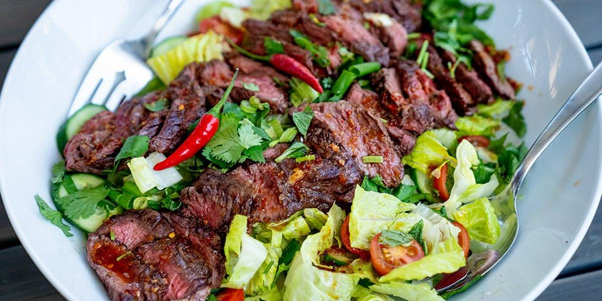

Thai Beef Salad

Description
A colorful, tangy salad that brings out the best in Thai cuisine and spices.
Ingredients
- Green onion
- Lemon Grass
- Cilantro
- Mint Leaves
- Lime Juice
- Fish Sauce
- Sweet Chili Sauce
- White Sugar
- Steak Fillet
- Lettuce
- Cucumber
- Tomatoes
Steps
- In a large bowl, stir together the green onions, lemon grass, cilantro, mint leaves, lime juice, fish sauce, chili sauce and sugar until well combined and the sugar is dissolved. Adjust the flavor, if desired, by adding more sugar and/or fish sauce. Set aside.
- Cook the steak over high heat on a preheated grill for approximately 4-6 minutes on each side, until it is cooked medium. Do not overcook the meat! Remove from heat and slice into thin strips. Add the meat and its juices to the sauce and refrigerate, tightly covered, for at least 3 hours.
- Tear the lettuce into bite size pieces and place in a salad bowl. Arrange the cucumber on top of the lettuce, and then pour the meat and sauce over. Top with the cherry tomatoes and garnish with fresh cilantro leaves.